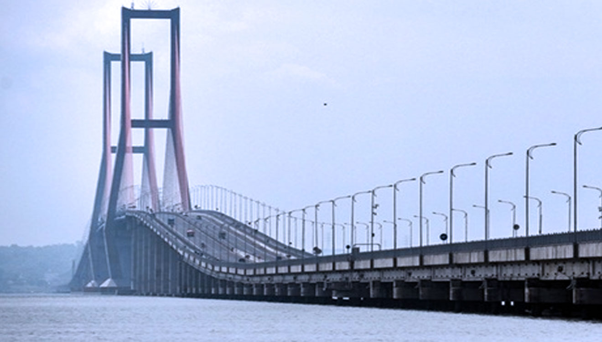

BANTEN

DKI JAKARTA
JAWA BARAT
JAWA TENGAH
DI YOGYAKARTA

the westernmost province of Indonesia’s island of Java, is known for its wilderness areas and coastal towns. Sandy stretches on the Sunda Strait include Anyer Beach and Carita Beach, known for water sports. Sawarna Beach, facing the Indian Ocean, is a popular surf break. Ujung Kulon National Park, home to the endangered Javan rhino, encompasses the southwest peninsula, Krakatoa reserve and several islands
Jakarta, Indonesia's massive capital, sits on the northwest coast of the island of Java. A historic mix of cultures – Javanese, Malay, Chinese, Arab, Indian and European – has influenced its architecture, language and cuisine. The old town, Kota Tua, is home to Dutch colonial buildings, Glodok (Jakarta’s Chinatown) and the old port of Sunda Kelapa, where traditional wooden schooners dock.
West Java is an Indonesian province on the island Java, extending south and east of
Jakarta. Bandung, the provincial capital, is known for Dutch-designed art deco buildings such as the
Villa Isola. Excursions from the city include Tangkuban Perahu volcano, which allows hiking to its
crater's rim, and forest-enclosed crater lake Kawah Putih.
Central Java is a province on the Indonesian island of Java, with a strong Buddhist and Hindu heritage. It's home to the 9th-century Borobudur Buddhist temple, a national icon carved with thousands of relief panels and Buddha images. The Prambanan Hindu complex, erected about a half-century after Borobudur on the border with Yogyakarta, contains more than 200 temples featuring stone spires, sculptures and carvings.
Yogyakarta is a central region on the Indonesian island of Java. Its capital,
also
called Yogyakarta, is a cultural hub known for its traditional crafts and performing arts. The city
is
home to the 18th-century royal complex, or kraton, known for its still-inhabited Sultan’s Palace as
well as open-air pavilions that host events like gamelan concerts and Javanese dance performances.
East Java, the rugged Indonesian province, includes the eastern part of Java plus
Madura and some smaller islands. It’s known for its volcanoes, including active Mt. Bromo, part of
the
vast Tengger Massif that falls within Bromo Tengger Semeru National Park. Rising from the vast Sea
of
Sand plain, Bromo affords dramatic crater views and stellar viewpoints over the surrounding
countryside.